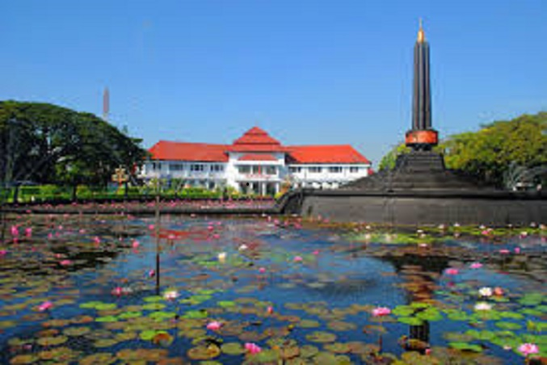

Jakarta
"The Special Capital Region of Jakarta is the nation's capital and largest city in Indonesia. As time goes by the Special Capital Region of Jakarta develops is the most modern city. Jakarta is also known as the center of government with multi-storey buildings. In June, Jakarta celebrated its 491th birthday. As we get older, the city attracts more and more immigrants from various regions in Indonesia. The reasons for some migrants coming to Jakarta also vary. Some want to find work and some want to take a vacation while visiting relatives there.Even though Jakarta is synonymous with traffic jams, don't make this problem a reason to remain silent. There are several tourist attractions that you can visit during your weekend with your family in Jakarta. Vacationing with family is also beneficial for maintaining mental health to avoid stress and depression."
Bali

"Bali is an island in Indonesia which is known for having green volcanoes, unique rice terraces, beaches and beautiful coral reefs. There are many religious tourist attractions such as Uluwatu Temple which stands on a cliff. In the South, the coastal city of Kuta offers nightlife tourism that is never lonely, while Seminyak, Sanur, and Nusa Dua are known for popular resort treats. The island of Bali is also known as a place for relaxation with yoga and meditation"
Malang

"Malang City is a City in East Java Province - Indonesia. Because of its location in the highlands, Malang City has comfortable weather and is quite cool compared to other cities in East Java. The second largest city in East Java has a variety of nicknames such as for example Paris van East Java, Tourism City, Military City, Historical City, Apple City, Cold City, City of Culinary and many other nicknames. But the most famous and distinctive nickname of Malang City itself is Student City. The nickname is indeed evidenced by the many schools and universities that stand in this city. In addition to being the city with the highest level of students in East Java, Malang also has a variety of attractions ranging from historic tourism such as temples and museums, religious tourism to entertainment tours that are worth visiting by both domestic and foreign tourists."